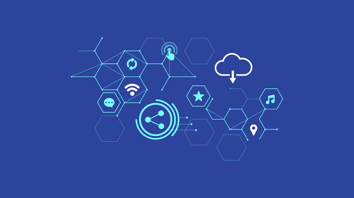

Inteligência artificial transforma o cotidiano
A inteligência artificial está cada vez mais presente em atividades do dia a dia, desde assistentes virtuais até ferramentas de produtividade.
Bem-vinda ao TechPulse! Aqui você acompanha as principais novidades, tendências e descobertas do universo tecnológico.

Explorar notíciasConheça algumas das principais áreas que estão transformando o mundo digital.
Acompanhe as novidades e tendências do mundo da tecnologia.
A inteligência artificial está cada vez mais presente em atividades do dia a dia, desde assistentes virtuais até ferramentas de produtividade.
Empresas utilizam serviços em nuvem para armazenar informações, executar aplicações e facilitar o acesso aos seus dados.
A proteção de dados e sistemas tornou-se essencial diante do crescimento das ameaças digitais.
O TechPulse é um portal dedicado à divulgação de notícias, tendências e informações sobre tecnologia e inovação.
Nosso objetivo é aproximar as pessoas do universo tecnológico, apresentando conteúdos de forma simples, acessível e informativa.